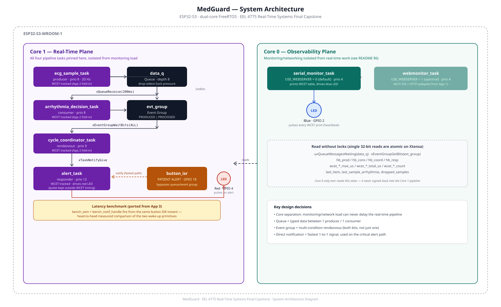

A real-time ECG monitoring system that detects arrhythmias locally and reports measured worst-case execution time evidence for every pipeline stage, built to demonstrate safety-critical embedded scheduling analysis and graceful degradation for a medical device embedded firmware engineering role.
MedGuard simulates a bedside ECG patient monitor on an ESP32-S3, running a dual-core FreeRTOS pipeline: a producer task samples a simulated ECG waveform at 20 Hz, a consumer task evaluates each sample for arrhythmia, a coordinator rendezvous confirms a full cycle completed, and a responder task raises an alert — either from that pipeline or from a manual patient-alert button ISR. Core 0 runs an isolated observability plane (serial or web monitor) that reads pipeline state without ever touching the real-time work it's reporting on.
Built for EEL 4775 Real-Time Systems as the final integration capstone, folding in a working component from three earlier assignments in the same course (Apps 1–3) rather than treating each as a disposable exercise.
Core 1 is the dedicated real-time plane — all four pipeline tasks live here, connected by a queue, an event group, and direct task notifications. Core 0 is the observability plane — the monitor only ever reads pipeline state via lock-free 32-bit reads; it never signals back into the pipeline, so monitoring load can never delay real-time work.

WCET measurement is folded in from App 2's Medical Pulse Monitor — the identical macro and mean/max/WCET+30% reporting pattern, applied here to all four Core-1 tasks. Full methodology and reproduction steps in task-table.md.
| Task | Prio | Trigger | Mean (µs) | Max (µs) | WCET+30% (µs) |
|---|---|---|---|---|---|
| ecg_sample | 8 | 50 ms (20 Hz) | fill in | fill in | fill in |
| arrhythmia_decision | 8 | queue receive | fill in | fill in | fill in |
| cycle_coordinator | 9 | event group | fill in | fill in | fill in |
| alert | 12 | task notification | fill in | fill in | fill in |
An educational risk analysis, not a regulatory claim — mapping design decisions to the standards that would govern a real deployment (ISO 14971, IEC 62304, IEC 60601-1/-8). Full table in hazard-analysis.md.
3–5 minute walkthrough: theme, live demo, architecture + task table, induced-failure/degradation demonstration, and what's next.
IPC primitive justification, queue sizing math, back-pressure policy, event group vs. semaphore analysis, measured notification-vs-semaphore latency (with a real debounce bug documented in-place), Core 0/1 rationale, and full AI-usage disclosure.
Read the full README ↗